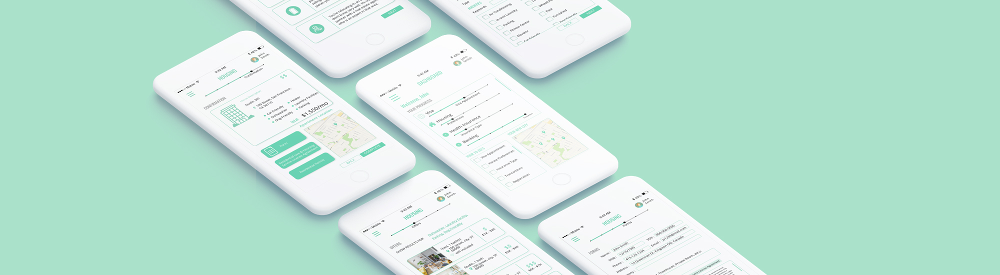

Localyze
UI/UX, Redesign
2019
Localyze is a startup company, aiming for facilitating the relocation processes for companies and individuals to move to a foreign country.
Team members
Nicole Lee
Joy Cho
Yvonne Wang
Duration
2 weeks
1. Home Page
This is the landing page of the application. When the user logins in, it navigates to the ‘Dashboard’ which shows the overview of the process. It includes a personalized To-Do’s list and a map of a new location. The hamburger menu is organized with the other categories such as visa, health insurance, and etc.
2. Housing/ Information / Preferences
This is the housing page. The progress bar on top shows the process of housing. Key informations about housing are listed under different topics. The user can create a preference for a more accurate and narrow search.
3. Housing/ Offers / Forms
Following the preferences, the offers are sorted by price low to high. Once the user chooses a housing, it navigates to 'Forms' page which includes necessary information to be filled out.
4. Confirmation
The confirmation page shows the housing summary and the purchase details.